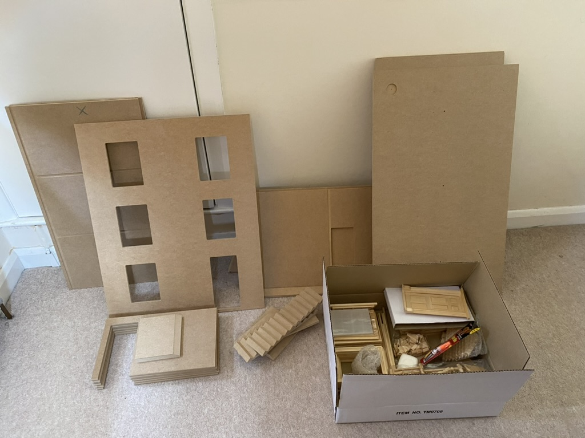
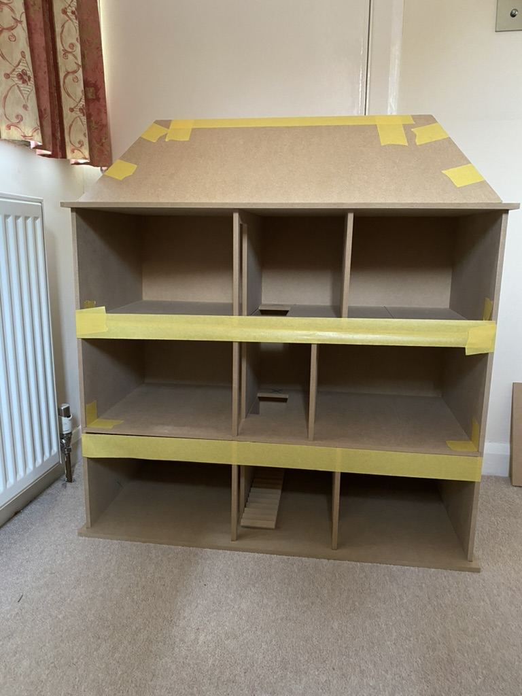
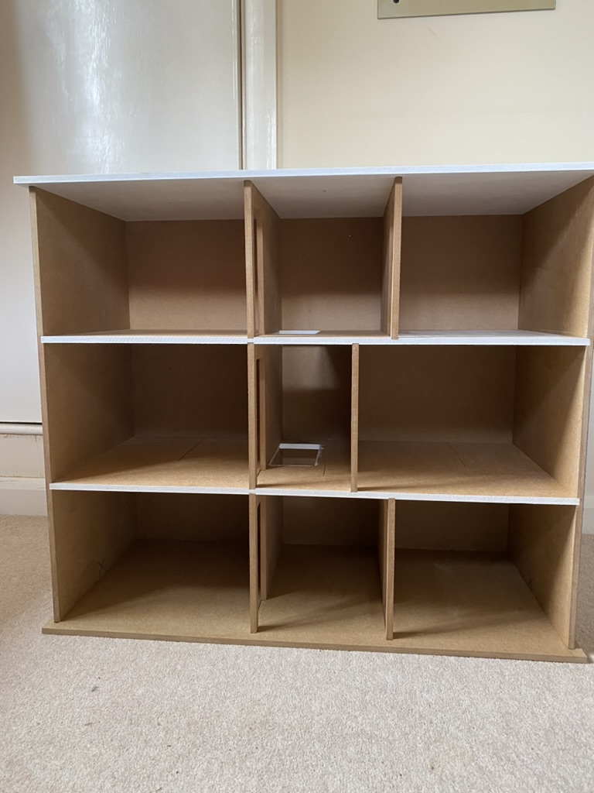
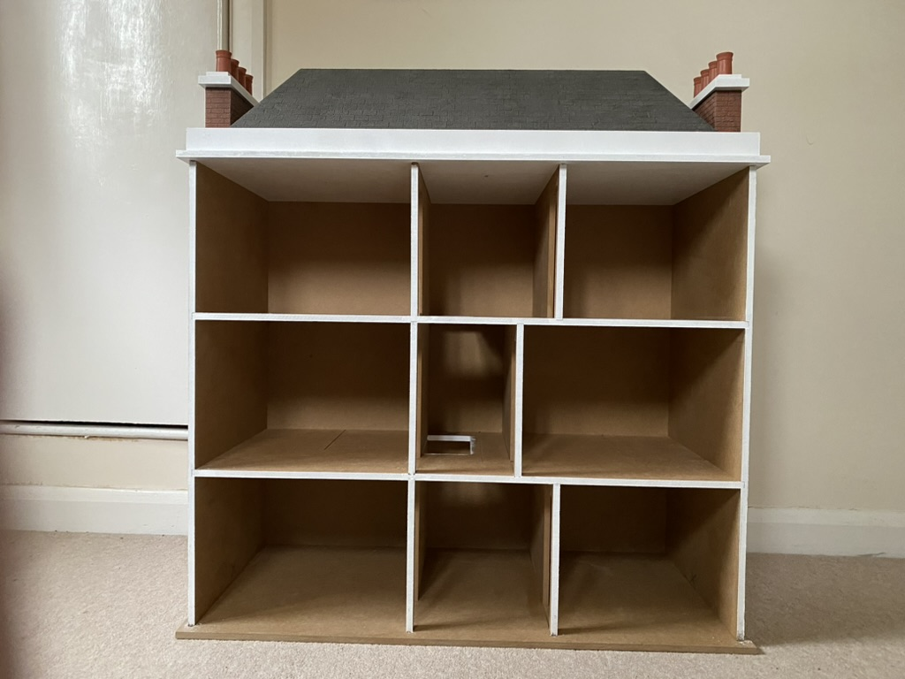
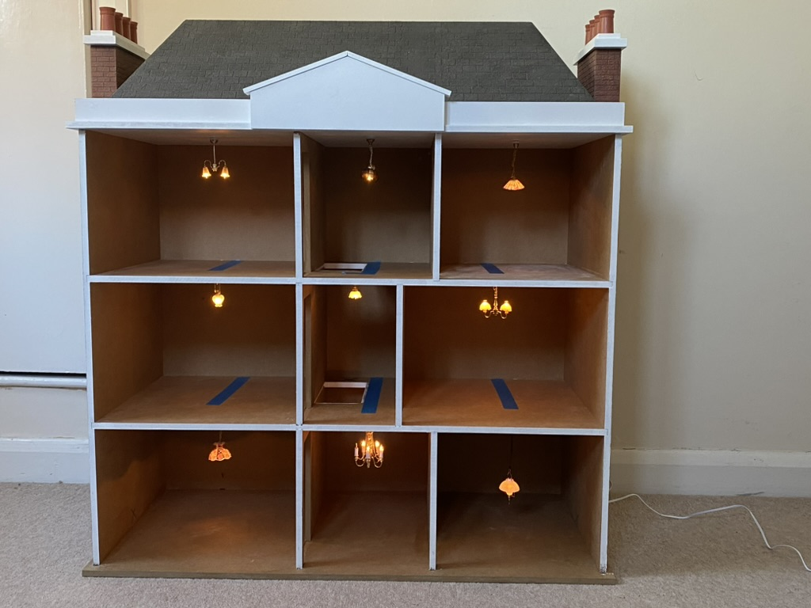
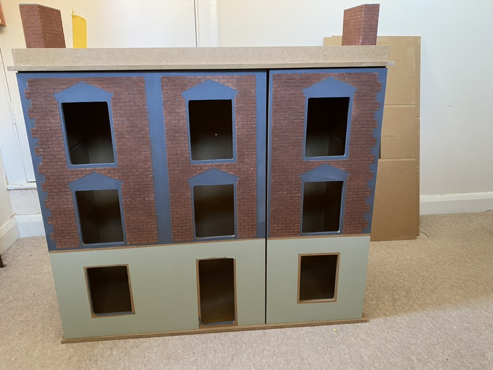

The doll's house was constructed from a detailed kit, providing all the essential wooden parts for assembly. Once the main structure was built, the ceilings were carefully painted to create a bright and clean look. Various floor coverings were then added to each room, including miniature carpets, tiles, and wooden flooring, to give every space its own character. Finally, the walls were decorated with patterned papers, adding warmth and personality to the interior and making each room unique.





